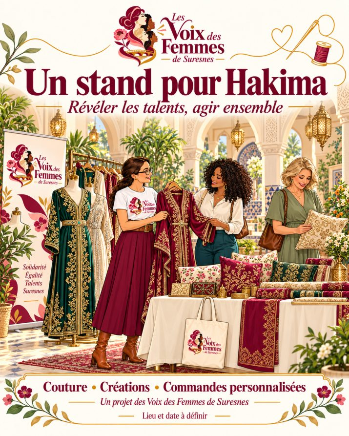

Des ailes et des voix pour la paix
Nos colombes de papier nourriront un projet collectif dont la forme et la présentation seront annoncées au fil de son avancée.
Des projets pour faire connaître les talents et créer des occasions de rencontre.

Agrandir l’afficheFaire connaître un talent, c’est aussi créer des occasions de rencontre. Avec le projet de stand d’Hakima, nous souhaitons présenter ses créations, son travail de couture et ses possibilités de commandes personnalisées.
Lieu et date à définir – annoncés dès qu’ils seront connus
Nos colombes de papier nourriront un projet collectif dont la forme et la présentation seront annoncées au fil de son avancée.
Notre projet de cuisine solidaire, autour de la préparation et du partage d’une soupe. Besoin de bras, de matériel ou d’organisation.
Travaux collectifs, créations personnelles et projets de l’association : retrouvez ici les expositions annoncées et les souvenirs de celles déjà présentées.
Un espace d’écoute et des ateliers pour que la parole des jeunes compte.